Decades of hands-on experience with maternal and child health, in Brazil and across Africa.
MScIH (UK), BSc (Brazil), RN (Brazil/UK) — International Consultant for RMNCAH+N
Regina Pereira da Silva has a degree in Nursing and Midwifery from the UFMG School of Nursing and is a registered nurse in Great Britain. She holds a master's degree in international health from the Institute of Global Health and Development of Queen Margaret University of Edinburgh, Scotland, with a thesis on public policies, HIV, AIDS and breastfeeding in sub-Saharan Africa. She has a diploma in public health from Glasgow University Medical School and trained in breastfeeding at the International Centre for Child Health, University of London, in 1993. For 38 years she has worked in maternal, newborn and child health, internationally since the 1990s, and has published extensively.
For the last 10 years she has worked as an independent consultant for international agencies in West, Central and Southern Africa, in health and nutrition programmes, especially the Baby-Friendly new version 2018/2020. She has worked closely with pregnant women, mothers, fathers, newborns, infants, adolescents and health professionals in hospitals and health centres across Africa, often in limited-resource, high-stress settings. She was also national consultant to the Brazil Ministry of Health, facilitating workshops in ten Brazilian states on lactation support in the workplace, and has collaborated with international NGOs and with Ariadne Labs' BetterBirth programme at the Harvard T.H. Chan School of Public Health.
E-mail: rds@mchfs.org
Welcome message pending — space reserved for Regina's personal welcome to professionals joining the programme.
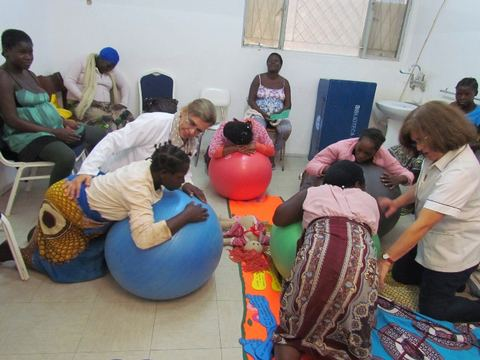


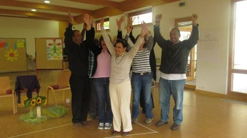
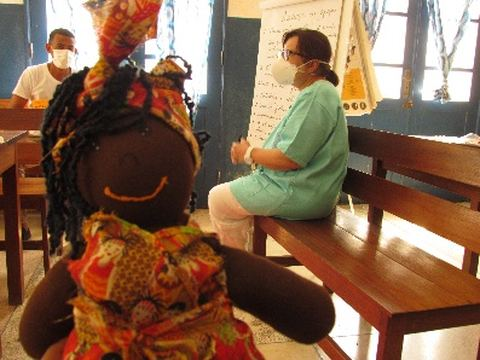


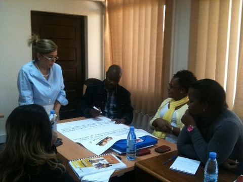


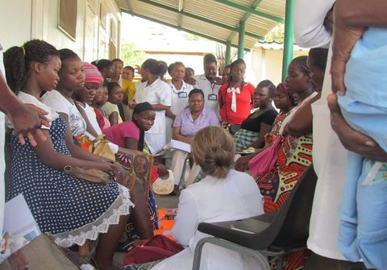
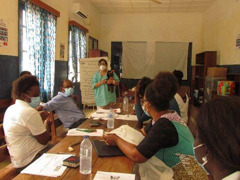
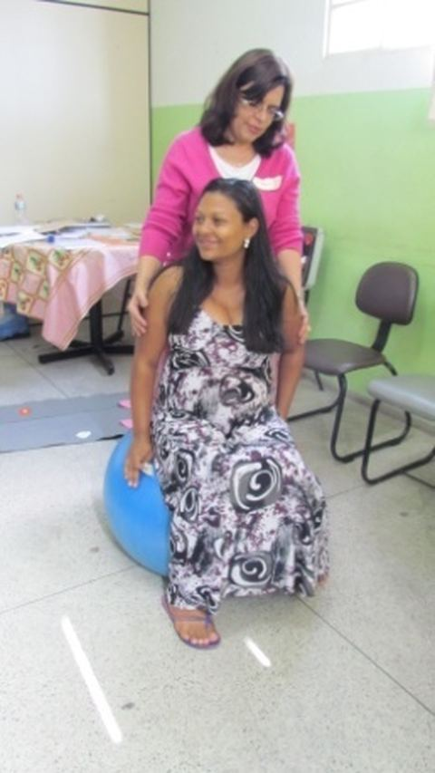

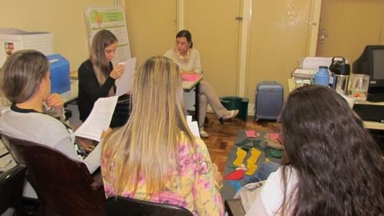
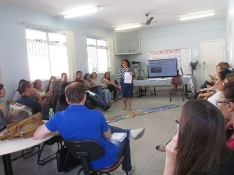

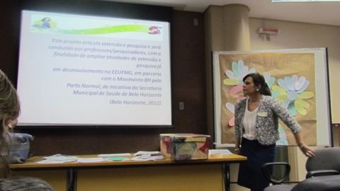
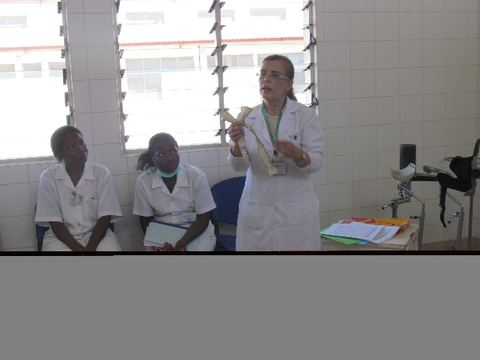

Mentor
Full biography pending — to be provided by the team.
Guest lecturer profiles pending — this section will list invited speakers as they are confirmed.